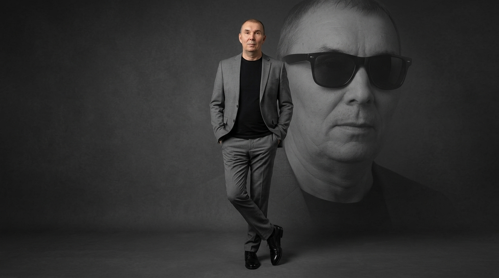
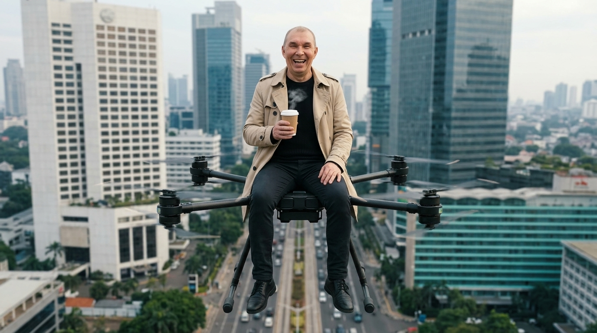

Павел Перов
Мультимедиа-дизайнер • AI-дизайнер
Визуальные коммуникации: от данных к истории
Дизайнер с управленческим прошлым и инженерным складом ума. Превращаю сложные данные, отчёты и смыслы в ясную визуальную логику: от полиграфии и инфографики до презентаций, видеомонтажа и ИИ-генерации.
лет в визуальных коммуникациях
лет системного и управленческого опыта
выпущенных материалов: посты, сборники, презентации
ИИ-инструментов в рабочем процессе
Дизайнер с управленческим прошлым и инженерным складом ума

avatar.jpg рядом с index.html
«Я говорю на одном языке с заказчиком, потому что сам когда-то сидел по другую сторону стола»
Более 15 лет управленческого и системного опыта научили меня главному: за каждой цифрой, таблицей или презентацией стоит конкретное управленческое решение. Поэтому я начинаю не с подбора шрифта, а с декомпозиции смысла — что именно должен понять читатель за первые 3 секунды.
Превращаю хаотичные таблицы и ТЗ в строгую модульную сетку без воды.
Соблюдаю регламент, единицы измерения и достоверность каждого показателя.
Ускоряю продакшн визуала, реставрацию фото и видео с помощью нейросетей.
Инфографика и дата-сторителлинг
Серии карточек для ВКонтакте и Telegram, якорные сравнения, рубрикаторы и визуализация статистики.
Полиграфия, сборники и календари
Многостраничная вёрстка в Affinity Publisher и InDesign, навигационные сетки, обложки и препресс.
Презентации и анимация графиков
Пересборка сложных слайдов «До и После», динамические дашборды и видеопрезентации в PowerPoint и Premiere.
AI-дизайн и промпт-инжиниринг
Исторические реконструкции, виртуальные ведущие без съёмок, реставрация архивных кадров и концепт-арт.
Избранные кейсы 2023–2026
Нажмите на любой кейс, чтобы открыть слайдер работ, разбор задачи, дизайн-решений и ключевых фактов.
Чем я могу быть полезен вашему проекту
Инфографика и визуализация данных
Отчёты, карточки для соцсетей, аналитические сводки и якорные сравнения, которые читаются за 3 секунды.
Презентации и анимация графиков
Пересборка слайдов «До и После», выступления для руководства, инвесторов и видеопрезентации.
Сборники, календари и полиграфия
Многостраничная вёрстка, серии обложек, навигационные сетки и подготовка макетов в печать.
ИИ-генерация, коллажи и постеры
Визуальные метафоры, реставрация архивов, ролики с ИИ-ведущими и акцидентные плакаты.
Автор этого портфолио. И, надеюсь, вашего следующего проекта.
Отвечаю в течение рабочего дня. Готов подключиться к задаче удалённо: от разовой презентации или серии инфографики до постоянного сопровождения контента.

drone.jpg рядом с index.html
P.S. Прихожу в проект вовремя и с кофе.